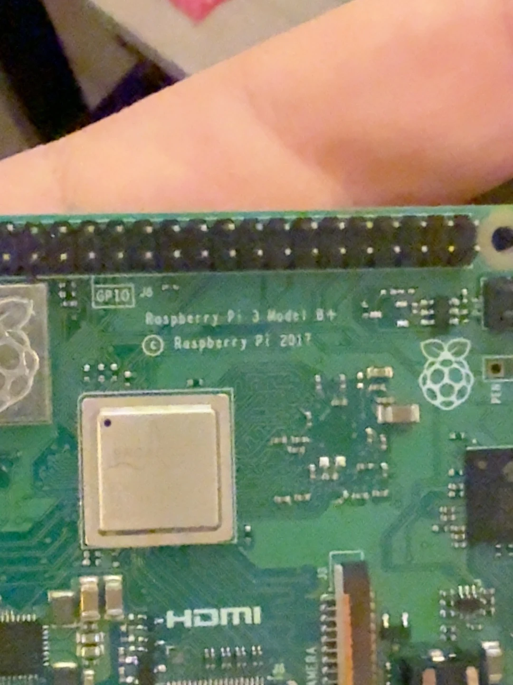
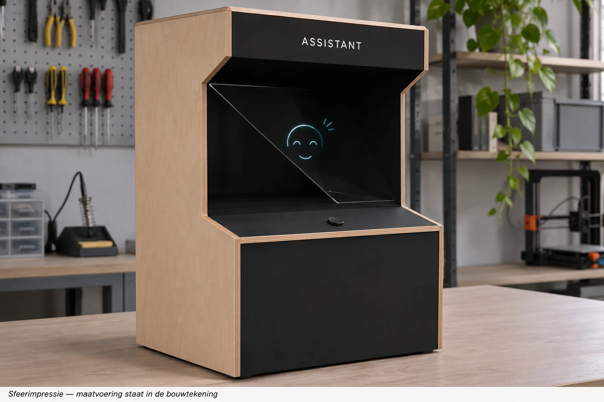
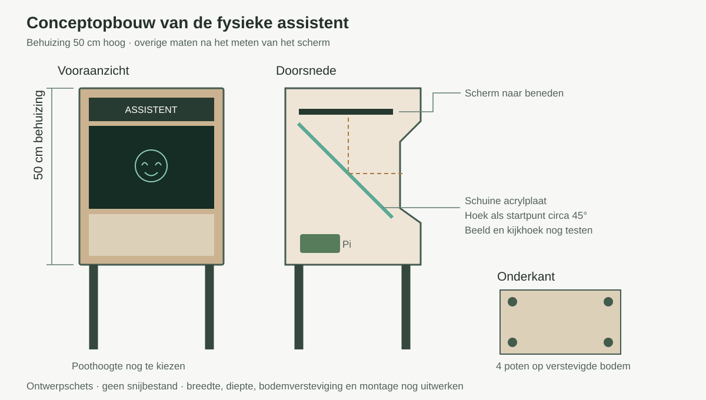
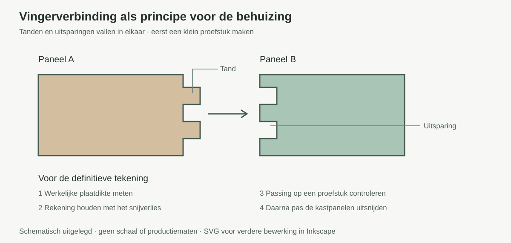
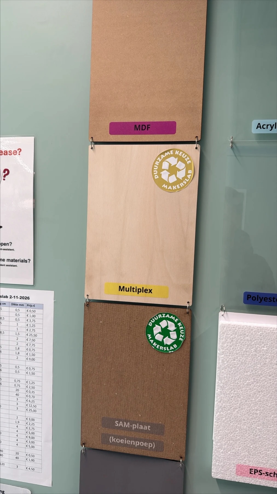
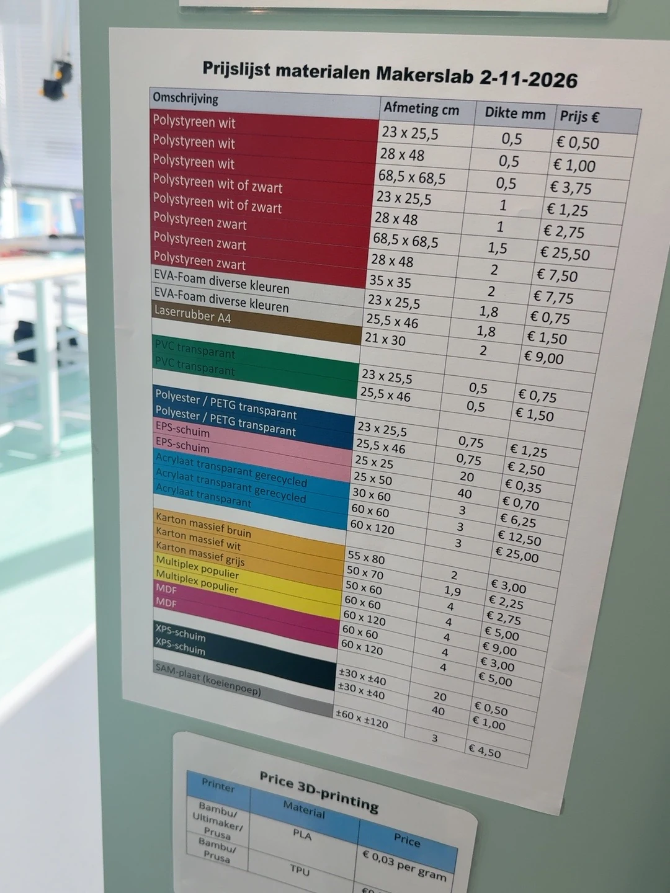

Sprint 3
Deze sprint ben ik vooral bezig geweest met de voorbereiding van ons fysieke prototype voor O&P Rijk. We willen onze assistent laten verschijnen met een soort hologrameffect. Ik heb de Raspberry Pi opgehaald en ben aan het uitzoeken hoe we de techniek en de behuizing samen kunnen krijgen.
Van mijn docent kreeg ik terug dat mijn vorige devlog te veel over alle activiteiten van de studio ging. Daarom hou ik het deze keer bij mijn eigen werk aan het project: wat ik heb uitgezocht, welke keuzes we maken en wat ik nog moet testen.
De Raspberry Pi voorbereiden
Voor ons project hadden we een Raspberry Pi nodig, dus die heb ik opgehaald, zoals op de foto hieronder te zien is. Ik ben begonnen met uitzoeken hoe je die eigenlijk aan de praat krijgt. Daarbij heb ik gekeken naar Raspberry Pi OS, een microSD-kaart, de voeding en het aansluiten van een scherm.
Met Raspberry Pi Imager kun je het besturingssysteem op de microSD-kaart zetten en alvast de wifi instellen. Mijn plan is om eerst te controleren of de Pi goed opstart en beeld geeft. Daarna wil ik onze demo op het scherm openen. De Pi moet straks het beeld van de assistent aansturen. Of onze hele demo er soepel op draait, moet ik nog testen.

Het ontwerp van de behuizing
Ik heb ook gekeken naar een design voor de behuizing. Het idee is een soort kleine arcadekast met een donkere binnenkant en een schuine transparante plaat. Daarin moet het beeld van de assistent zichtbaar worden. We gaan voor een behuizing van 50 cm hoog. Dat is het formaat dat we nu willen uitwerken voor het prototype.
Onder de kast willen we vier IKEA-tafelpoten monteren. Dan kan het prototype op zichzelf staan en hoeven we het niet steeds op een tafel te zetten. De hoogte van de poten moeten we nog kiezen. Ik wil in het lab ook bespreken hoe we de onderkant verstevigen, zodat de poten goed vastzitten. Voor de breedte en diepte moeten we eerst het scherm en de ruimte voor de schuine plaat goed nameten.


Uitleg in het Makerslab
In het Makerslab heb ik van een meneer uitleg gekregen over vingerverbindingen. Dat zijn eigenlijk tandjes aan de randen van de platen die in elkaar vallen. Dat leek mij handig voor onze kast, omdat je zo losse panelen op elkaar kunt laten aansluiten. Hij vertelde ook over Inkscape, AutoCAD en MakerCase. Daar ben ik me nu verder in aan het verdiepen.
Ik heb gekeken hoe deze programma’s kunnen helpen bij het ontwerp. Met MakerCase kun je een basisdoos met vingerverbindingen uitwerken en als SVG of DXF exporteren. Inkscape wil ik gebruiken om de vormen verder aan te passen. AutoCAD is een andere mogelijkheid om de panelen op maat te tekenen. Een standaard doos is nog niet onze arcadekast, dus de schuine voorkant en de opening moeten we apart uitwerken.
Voor de opbouw en de verbindingen heb ik eerste concepttekeningen laten uitwerken. Die kan ik verder bewerken in Inkscape of AutoCAD. Wat ik vooral heb meegenomen uit het uitzoeken, is dat de dikte van de plaat en het snijverlies invloed hebben op hoe de onderdelen passen. Daarom wil ik eerst een klein proefstuk maken voordat we de hele kast laten snijden.

Materialen uitzoeken
Ik heb in het Makerslab gekeken welke materialen er zijn en wat we willen bestellen. Dit is mijn voorlopige bestellijst:
| Materiaal | Afmeting | Aantal |
|---|---|---|
| MDF | 60 × 120 cm | 4 platen |
| Clear recycled acrylic | 30 × 60 cm | 1 plaat |
Het MDF willen we gebruiken voor de kast. De transparante acrylplaat is bedoeld voor het hologrameffect. De plaatdikte en de verdeling van de onderdelen over de platen wil ik nog met het lab controleren. Daarnaast heb ik gezocht naar reflectieve folie en een bedrijf gevonden waar ik misschien een gratis sample kan krijgen. Dat is nog niet bevestigd. Met zo’n sample wil ik eerst kijken of het beeld beter zichtbaar wordt.




Wat ik hiervan meeneem
Wat deze sprint goed ging, was dat ik het idee concreter heb gemaakt. De Raspberry Pi is opgehaald, we hebben een richting voor de behuizing en ik weet beter wat ik moet voorbereiden voor het Makerslab. Ik merk wel dat ik een ontwerp snel mooi vind, terwijl ik nog niet precies weet hoe alles in elkaar moet. Daarom wil ik de volgende stap vooral gebruiken om te kijken of de maten, verbindingen en het beeld ook echt werken.
Volgende week beginnen met bouwen
Volgende week wil ik in het Makerslab beginnen met het maken van het prototype. Eerst wil ik de maten en tekeningen met een medewerker nalopen en een vingerverbinding testen. Daarna kunnen we de panelen snijden en de behuizing in elkaar zetten. Ook wil ik de Raspberry Pi met het scherm testen en kijken naar de hoek van de acrylplaat. Tijdens het bouwen ga ik foto’s maken, zodat ik in mijn volgende devlog kan laten zien wat ik heb aangepast en waarom.